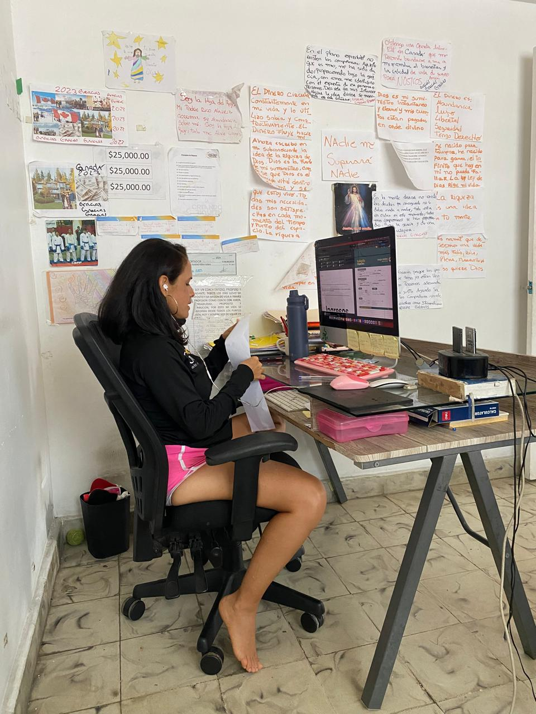
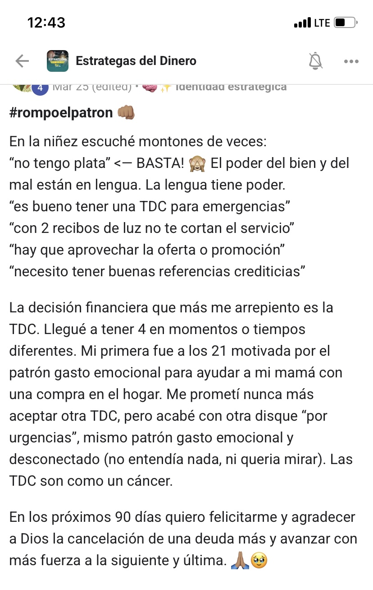
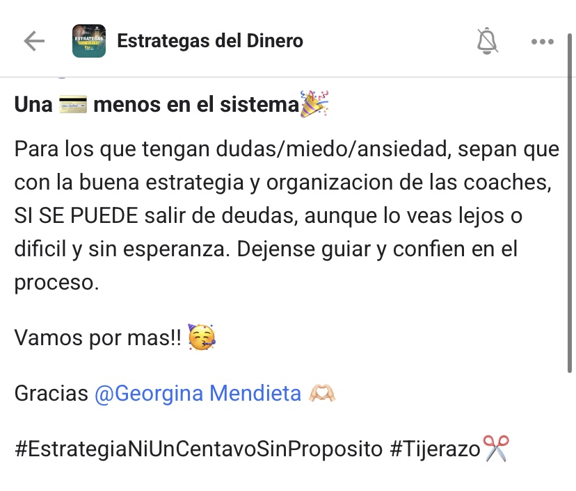
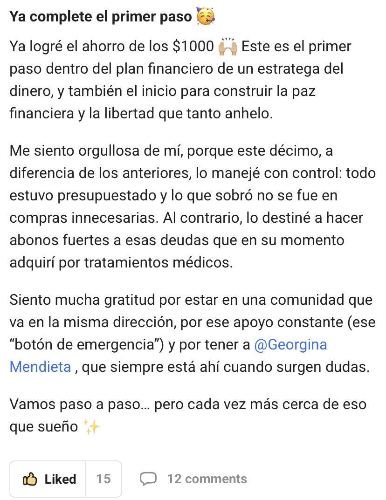
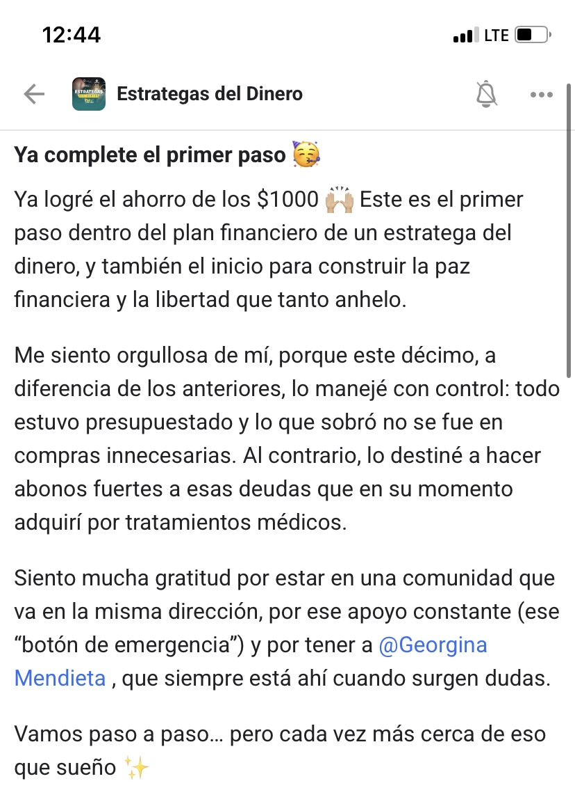
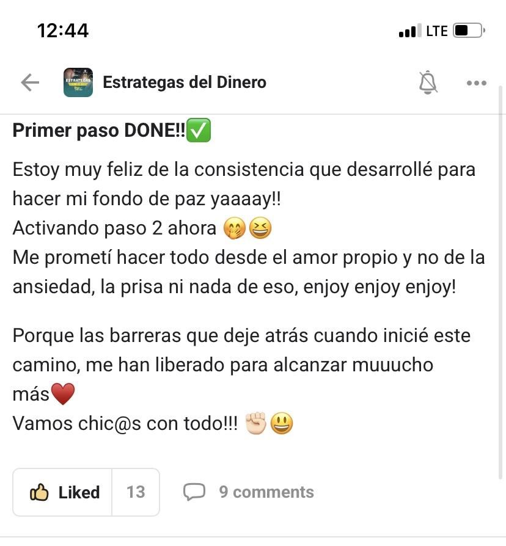

El sistema #1 en Latinoamérica
que te va a guiar a convertirte excelente administrador de tu dinero, eliminar deudas y construir libertad financiera.
+200 familias latinas transformaron sus finanzas con este método.
que te va a guiar a convertirte excelente administrador de tu dinero, eliminar deudas y construir libertad financiera.
+200 familias latinas transformaron sus finanzas con este método.
Y lo peor es que no es tu culpa.
El sistema educativo nos enseña matemáticas, historia y ciencias. Pero nunca nos enseñó cómo funciona el dinero real. Los patrones financieros se aprenden en casa — y si en tu hogar el dinero era sinónimo de estrés, de escasez o de deudas, eso es exactamente lo que aprendiste a repetir. Pero los patrones se pueden cambiar. Y eso es lo que hacemos en Paz Financiera.
Hace 10 años ganaba bien, trabajaba duro y aun así vivía angustiada por el dinero. Tenía deudas, no tenía ahorros y cada quincena era una carrera contra el tiempo. Nadie en mi familia me había enseñado a manejar el dinero — simplemente se gastaba y ya.
Un día me harté. Decidí estudiar finanzas personales, cambiar mis hábitos y aplicar un sistema que realmente funcionara. En menos de 2 años eliminé todas mis deudas, construí un fondo de emergencia y empecé a invertir por primera vez en mi vida.
Hoy eso mismo es lo que enseño.
No te enseño teoría. Te enseño exactamente lo que a mí me funcionó.


Una sesión privada y personalizada donde vamos a trabajar juntos para que por primera vez tengas una visión real y honesta de tu situación financiera actual. En esta sesión vas a:
Esta sesión está diseñada para personas con ingresos de $3,000 o más al mes que están listas para hacer un cambio real y comprometidas a dejarse guiar.
NO trabajo con cualquiera — trabajo con personas que realmente están listas para transformar su relación con el dinero.




